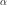
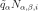
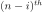
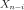
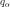
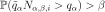
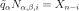

Wilks¶
-
class
Wilks(*args)¶ Class to evaluate the Wilks number.
Refer to Estimating a quantile by Wilks’ method.
- Parameters
- randomVector
RandomVectorof dimension 1 Output variable of interest.
- randomVector
Notes
This class is a static class which enables the evaluation of the Wilks number: the minimal sample size to perform in order to guarantee that the empirical quantile

, noted
evaluated with the
maximum of the sample, noted
be greater than the theoretical quantile
with a probability at least :
:

where

.Methods
ComputeSampleSize(quantileLevel, confidenceLevel)Evaluate the size of the sample.
computeQuantileBound(self, quantileLevel, …)Evaluate the bound of the quantile.
getClassName(self)Accessor to the object’s name.
-
__init__(self, *args)¶ Initialize self. See help(type(self)) for accurate signature.
-
static
ComputeSampleSize(quantileLevel, confidenceLevel, marginIndex=0)¶ Evaluate the size of the sample.
- Parameters
- alphapositive float

The order of the quantile we want to evaluate.
- betapositive float
Confidence on the evaluation of the empirical quantile.
- iint
Rank of the maximum which will evaluate the empirical quantile. Default
 (maximum of the sample)
(maximum of the sample)
- alphapositive float
- Returns
- wint
the Wilks number.
-
computeQuantileBound(self, quantileLevel, confidenceLevel, marginIndex=0)¶ Evaluate the bound of the quantile.
- Parameters
- alphapositive float
The order of the quantile we want to evaluate.
- betapositive float
Confidence on the evaluation of the empirical quantile.
- iint
Rank of the maximum which will evaluate the empirical quantile. Default
(maximum of the sample)
- alphapositive float
- Returns
- q
Point The estimate of the quantile upper bound for the given quantile level, at the given confidence level and using the given upper statistics.
- q
-
getClassName(self)¶ Accessor to the object’s name.
- Returns
- class_namestr
The object class name (object.__class__.__name__).